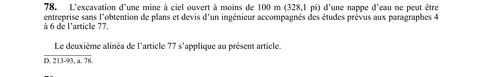

art-78-RSSM : excavation ciel ouvert sous nappe
Un article du wiki ⚖️ Recueil législatif
En bref
L'excavation d'une mine à ciel ouvert à moins de 100 m d'une nappe d'eau ne peut être entreprise sans plans. Cette obligation vise l'employeur.
- Et devis d'un ingénieur accompagnés des études prévues aux paragraphes 4 à 6.
- Excavation à moins de 100 m d'une nappe d'eau.
- Études prévues aux paragraphes 4 à 6 de l'article 77.
- Documents conservés sur site en tout temps.
🌐 LegisQuébec · 📄 PDF officiel
Texte officiel : capture du PDF
{kind=link}

Toucher l'image pour l'agrandir🔗 Voir art. 78 RSSM dans le PDF (page 34)
Version : texte officiel du RSSM (RLRQ c. S-2.1, r. 14), à jour au 1er mai 2024 — Éditeur officiel du Québec
Voir aussi
- art. 76 : définition influence nappe d'eau · pour l'application de la sous-section, une excavation souterraine est sous l'influence d'une nappe d'eau lorsqu'elle se trouve à moins de 100 m du profil du roc sous la nappe à son plus haut niveau.
- art. 77 : plans ingénieur excavation sous nappe · interdiction : aucune excavation souterraine sous l'influence d'une nappe d'eau ne peut être entreprise sans plans et devis d'un ingénieur accompagnés de six études portant notamment sur la surface du site, la distribution et les propriétés mécaniques des sols.
- art. 79 : remblayage isolation chantier abandonné nappe · obligation : tout chantier d'abattage abandonné, sous l'influence d'une nappe d'eau et situé à moins de 40 m de la surface du roc, doit être remblayé ou isolé par un barrage ou une cloison.
- art. 80 : inspection toit chantier sous nappe · obligation : le toit d'un chantier d'abattage non remblayé exploité ou ayant été exploité sous l'influence d'une nappe d'eau doit être inspecté au moins une fois par jour.
- ⚖️ Loi habilitante : LSST
- ↑ Index du bloc : Aménagement du chantier
Pages qui pointent ici (5)
- art-76-RSSM : définition influence nappe d'eau Recueil législatif
- art-77-RSSM : plans ingénieur excavation sous nappe Recueil législatif
- art-79-RSSM : remblayage isolation chantier abandonné nappe Recueil législatif
- art-80-RSSM : inspection toit chantier sous nappe Recueil législatif
- RSSM : Aménagement du chantier (art. 12 à 99) Recueil législatif